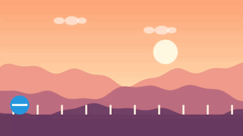

// Landscape footage in, 1080×1920 out: the clip is scaled to fill the frame.
let url = try await Video {
VideoClip(url: droneURL).trimmed(to: 0...6)
}
.overlay(
TextOverlay("Above the Alps", style: TextStyle(fontSize: 104, alignment: .center,
weight: .bold, shadow: TextShadow()))
.position(.normalized(x: 0.5, y: 0.14))
)
.preset(.reelsAndShorts)
.export(to: outputURL)
Picture-in-picture reaction
A second clip as a layer, from half a second in.
let url = try await Video {
VideoClip(url: droneURL).trimmed(to: 0...6)
VideoClip(url: reactionURL).trimmed(to: 0...5) // a second layer, from 0.5 s
.at(time: 0.5)
.transform(Transform(center: .normalized(x: 0.96, y: 0.06), scale: 0.35, anchor: .topRight))
}
.preset(.cinema)
.export(to: outputURL)
Green screen
A presenter filmed on green, in front of a backdrop.
let url = try await Video {
ImageClip(dusk, duration: 5) // the backdrop
VideoClip(url: presenterURL) // filmed on green
.filter(.chromaKey(color: .green, threshold: 0.35))
.at(time: 0)
}
.preset(.cinema)
.export(to: outputURL)

Speed ramp
Into slow motion, then double speed, with the audio following.
let ramp = Animation<Double>.keyframes([
.at(0.0, value: 1.0),
.at(1.2, value: 0.25), // into slow motion…
.at(2.4, value: 2.0), // …then double speed
.at(4.0, value: 1.0),
])
let url = try await Video {
VideoClip(url: rollURL).speed(.curved(ramp))
}
.preset(.cinema)
.export(to: outputURL)
Animated titles
Outlined text that slides in, and a subtitle that fades in under it.
let title = TextStyle(fontSize: 132, weight: .bold, stroke: TextStroke(width: 4), shadow: TextShadow(blur: 8))
let subtitle = TextStyle(fontSize: 64, weight: .medium, shadow: TextShadow(blur: 6))
let url = try await Video {
VideoClip(url: droneURL).trimmed(to: 0...5)
}
.overlay(
TextOverlay("Chapter one", style: title)
.position(.normalized(x: 0.06, y: 0.72)).anchor(.bottomLeft)
.visible(during: 0.3...5.0)
.animation(.slideIn(from: .fromLeft, duration: 0.6))
)
.overlay(
TextOverlay("The long way up", style: subtitle)
.position(.normalized(x: 0.06, y: 0.82)).anchor(.bottomLeft)
.visible(during: 1.0...5.0)
.animation(.fadeIn(duration: 0.6))
)
.preset(.cinema)
.export(to: outputURL)
Why kadr
FFmpegKit retired in January 2025, and Pixel SDK followed a month later.
AVFoundation can do it all, but a crossfade there is 120 lines of bookkeeping.
3lines of kadr to turn one clip into an upright, filled 9:16 export
A crossfade in AVFoundation is 120 lines of bookkeeping. Fixing that took a
year; the week after 1.0 taught me more, because building one more package
against the frozen surface turned up seven places the library could hand you a
value and give you no way back — and 658 tests could not see any of them.